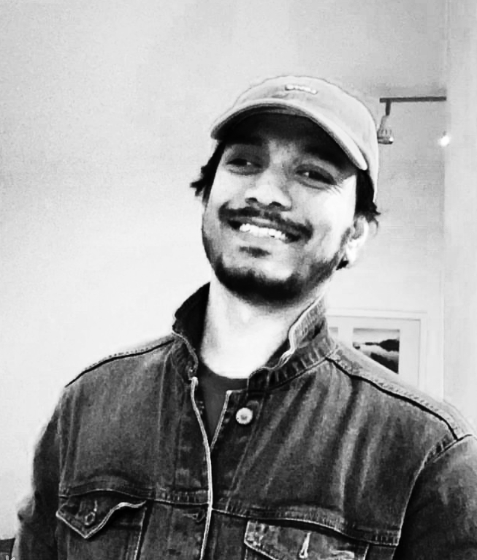

<div class="p-4 d-flex">
  <div class="row">
    <div class="col-9 d-flex justify-content-around">
      <div>
        <p>
          Hello! I'm Umesh,
        </p>
        <p>
          Technology is my playground, and I have a particular fondness for
          open-source computing. I'm deeply fascinated by single-board computers
          like the Raspberry Pi, which offer endless possibilities for
          innovation. My technical skill set spans across computer networking
          and hypervisors, with Java and JavaScript being my go-to programming
          languages.
        </p>
        <p>
          Outside the tech world, I'm an avid enthusiast of cars and
          motorcycles, reveling in the engineering marvels and the thrill they
          provide. Photography is another passion of mine, allowing me to
          capture and appreciate the beauty of the world around me.
        </p>
        <p>
          My life is a blend of continuous learning and exploration, always
          seeking new challenges and opportunities to grow. Join me as I
          navigate through the exciting landscapes of technology and beyond,
          driven by curiosity and a relentless pursuit of excellence.
        </p>
      </div>
    </div>
    <div
      class="col-3 d-flex align-self-center justify-content-end align-content-center"
    >
      
    </div>
  </div>
</div>
